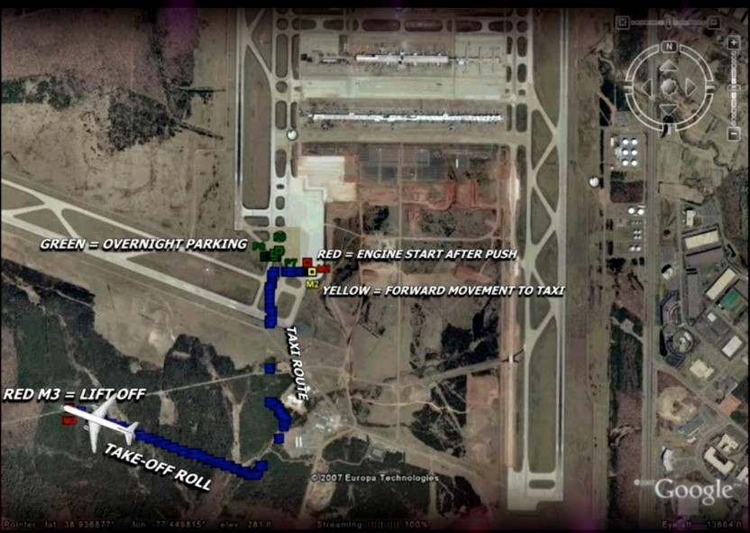

American Airlines 'Flight 77' - “An Independent Analysis”
Tuesday, 26 May 2020American Airlines ‘Flight 77’ - The Official Narrative
American Airlines Flight 77 was a scheduled American Airlines domestic transcontinental passenger flight from Washington Dulles International Airport in Dulles, Virginia, to Los Angeles International Airport in Los Angeles, California. The Boeing 757-223 aircraft serving the flight was hijacked by five Saudi men affiliated with al-Qaeda on September 11, 2001, as part of the September 11 attacks. They deliberately crashed the plane into the Pentagon in Arlington County, Virginia, near Washington, D.C. killing all 64 people on board, including the five hijackers and six crew. Less than 35 minutes into the flight, the hijackers stormed the cockpit and forced the passengers, crew, and pilots to the rear of the aircraft. Hani Hanjour, one of the hijackers who was trained as a pilot, assumed control of the flight. Unknown to the hijackers, passengers aboard made telephone calls to friends and family and relayed information on the hijacking. The hijackers crashed the aircraft into the western side of the Pentagon at 09:37 EDT. Source: [9/11 Commission Report].
AAL 77 departure gate data conflicts with the official narrative
News media sources reported within days of 11th September, 2001 that AAL 77 took off ten minutes late but none of the media named from which gate AAL 77 left from. It wasn’t until an official Staff Report dated August 26, 2004 identified the gate as "Gate D26". The official narrative claims that AAL 77 departed Washington Dulles International Airport at approximately 08:20 a.m. from Terminal D Gate 26. Flight recorder positional data provided by the National Transportation Safety Board (NTSB) reveals a different story. ‘Pilots For 9/11 Truth’ conducted analysis of the aircraft flight positional data which I have included here below.
An illustration of Dulles International Airport Concourse D and their respective gates. It shows gate D26 on the southwest corner of the terminal.
{kind=link}
Below is the raw latitude/longitude plot based on the information as seen in the raw Flight Data Recorder file provided by the NTSB. As you can see there is an offset from the runway during departure. This is due to navigational errors associated with the device involved, called an Inertial Navigation System (INS).
{kind=link}
The colour coding is recognized as:
Green P9-P0 is night before engine off
Red M1 is the engine start after pushback
Yellow M2 is forward movement into a turn for start of taxi
Red M3 is Radio Alt 3 Feet, 1st indication of lift off

{kind=link}
After adjusting the Latitude/Longitude offset based on drift prone to the navigational equipment utilised, the positional data has the aircraft departing a gate further east of gate D26, and on the north-side of the concourse. See overlay below:
{kind=link}
Image below, is zoomed in for closer inspection
{kind=link}
In the two pictures above it indicates that the airplane backed out of the north-side gate D19 or D21. This is because the red M1 is parked, and the Yellow M2 is pushed back from the gate, and the airplane pushed south out of the gate, towards the bottom of picture and judging by the length of taxi west, you are dead on for the left turn onto the other taxiway. This indicates the airplane had to have been pushed back from the south side of the terminal around gate D19 or D21, definitely not from gate D26. The IRS' use laser ring gyros are very accurate, although do have a small allowance for drift rate, and if they exceed that then they fault. See this short detailed video extract presentation by Pilots For 9/11 Truth – (SKYGATE 911) covering the relevant information above:
What about the passengers?
New evidence of two photographs which surfaced in a documentary film made about the Pentagon Attack in 2011 show passengers at gate D26.
Taking into account the airplane positional data discrepancy which indicates that AAL 77 did not depart from gate D26, and was most likely gate D19 or D21, it presents further conflicts as it appears some passengers did appear to board at gate D26. See below:
{kind=link}
I used the – The National 9/11 Pentagon Memorial website to help me identify who is captured in the photographs: https://pentagonmemorial.org/explore/biographies. See below:
A: Dora Marie Menchaca – https://pentagonmemorial.org/explore/biographies/dora-marie-menchaca
B: Dong Chul Lee – https://pentagonmemorial.org/explore/biographies/dong-chul-lee
C: Sara M. Clark – https://pentagonmemorial.org/explore/biographies/sara-m-clark
D: Robert Penninger – https://pentagonmemorial.org/explore/biographies/robert-penninger
E: James D. Debeuneure – https://pentagonmemorial.org/explore/biographies/james-d-debeuneure
F: Asia S. Cottom – https://pentagonmemorial.org/explore/biographies/asia-s-cottom
G: Karen Ann Kincaid – https://pentagonmemorial.org/explore/biographies/karen-ann-kincaid
H: Rodney Dickens – https://pentagonmemorial.org/explore/biographies/rodney-dickens
There has been no official cctv or photographical evidence released of any of the passengers boarding their flights on 9/11. This photograph demonstrates that some of the passengers were at gate D26 at Dulles Airport. I have analysed some other photographs taken at Dulles Airport's gate D26, in an attempt to identify and confirm that the passengers were at the correct gate D26. See below:

In the second photograph below, it shows the school children and their teachers along with two National Geographic representatives. The school children in the photograph won a National Geographic competition and were on a trip organised by National Geographic as the prize. This photograph was also shown in the Pentagon documentary, however I managed to track down a better quality version of it at a website. Source:
{kind=link}
From left to right:
James D. Debeuneure – https://pentagonmemorial.org/explore/biographies/james-d-
Rodney Dickens – https://pentagonmemorial.org/explore/biographies/rodney-dickens
Bernard C. Brown II – https://pentagonmemorial.org/explore/biographies/bernard-c-brown-ii
Hilda E. Taylor – https://pentagonmemorial.org/explore/biographies/hilda-e-taylor
Asia S. Cottom – https://pentagonmemorial.org/explore/biographies/asia-s-cottom
J. Joseph Ferguson – https://pentagonmemorial.org/explore/biographies/j-joseph-ferguson
Ann C. Judge – https://pentagonmemorial.org/explore/biographies/ann-c-judge
So assuming the photographs are authentic (I have no reason to believe they aren’t) and checking Dulles International Airport pictures of both old and new pictures of gate D26 boarding area, the photographs do to some degree provide evidence of some of the passengers named boarding AAL 77 appearing in the photographs. Whether they were boarding AAL 77 is now in question, taking into account the airplane positional data discrepancy which 'Pilots For 9/11 Truth' highlighted, demonstrating that AAL 77 was stationed at a different gate (D19 or D21), not gate D26.
Also captured on CCTV at the checking-in area at Dulles Airport on 9/11 was Mari-Rae Sopper. She was captured with her cat passing through the check-in area and also heading onto the concourse to make her way to gate D26 where AAL 77 allegedly departed from.
Mari-Rae Sopper's profile can be viewed at the National 9/11 Pentagon Memorial Biography can be found here: https://pentagonmemorial.org/explore/biographies/mari-rae-sopper
Bureau of Transportation Statistics (BTS) Discrepancies
An astonishing discovery made by the late Australian blues guitarist Gerard Holmgren (and confirmed by others) which he published on 13th November 2003, found that according to the original Bureau of Transportation Statistics (BTS), showed that AAL 11 and AAL 77 were not listed in the flight log statistics for September 11th. Moreover when they were later logged in the BTS listings it showed neither AAL 11 nor AAL 77 could not have taken off. Furthermore, they did not have an aircraft number assigned to either of them.
Below: AAL 77’s details logged in the Bureau of Transportation Statistics (BTS) records.
{kind=link}
According to the BTS database entry, it lists no wheels-off time for AAL 77 for that day. In the official record, the NTSB say the data was not reported, in the confusion of the day. Some researchers made the assumption, that it proved AAL 77 never existed, but does the data indicate that assumption? If we take the data at face-value, rather than assuming it is incorrect, misreported, or falsified, what does the data tell us? It tells us that AAL 77 existed, however it never took off. The wheels-off data is recorded automatically and electronically, the fact that the entry exists shows that AAL 77 was scheduled. The fact that the data shows the time as 00:00 indicates that the wheels never moved. The BTS data is in direct conflict with positional data of the airplane released by NTSB, which shows that the airplane did move, and taxied towards the runway for take-off. Additionally, there is another discrepancy indicating that the airplane was positioned at Gate D19 or D21 not Gate D26 which was reported in the official Staff Report, released August 2004.
Like the other three flights, there is conflicts in the official data, which do not conclusively support the official narrative.
Aircraft Communications Addressing and Reporting System (ACARS) discrepancies
According to the official ACARS data contained in the PDF document - 5 AWA 898 Printout
At 11:49:18 a.m. (7:49:18 a.m. EST) and 12:09:01 p.m. (8:09:01 a.m. EST) American Airlines Flight 77's ACARS (Uplink and Downlink) messages sent to and from the airplane indicates a discrepancy in the identity of the flight number. The flight number is identified as: AA0000 at 8:09:01 a.m. EST. This should not be the case. Also note, there is a noticeable 20 minute gap in the ACARS data communications before AAL 77 officially was scheduled to take-off at 8:10 a.m. EST, even though it is alleged AA77 took off late at 8:20 a.m. EST, according to the NTSB Report February 2002.
The anomalous flight number AA0000 is non-existent, yet still lists the correct tail number. In the other instances in the ACARS data, it does show the correct flight number AA0077 and correct tail number N644AA. Why is there a 20 minute gap missing in the ACARS data at the time AAL 77 was scheduled to take off? According Air Traffic Control recordings/transcripts we are led to believe an airplane (AAL 77) took off. So again, there’s a pattern of conflicting official data with flights all the flights on 9/11 (AAL 11, UAL 175 and UAL 93) and AAL 77 is no exception.
{kind=link}
The ACARS data infers that at 11:49 a.m. an UPBLK was sent to an airplane with the tail number N644AA with reference to a flight number AAL 77, yet by 12:09 p.m. at the time of the scheduled take off AAL 77, the same airplane with tail number N644AA displays a non-existent flight number AA0000. It is compelling because there is no ACARS contact made for 20 minutes with the airplane, and the fact a downlink message (DLMSG) was sent from the airplane displaying a non-existent flight number. Does this suggest either the airplane didn’t take off, or a different airplane took instead?
According to the BTS data-base evidence it does suggest that AAL 77 didn’t take off, perhaps suggesting the ACARS data indicates a different airplane took off instead. Moreover, does this also support Pilots For 9/11 Truth’s analysis regarding the flight recorder positional data evidence, which reveals the possibility that AAL 77 was not at Gate D26, but at Gate D19 or D21 instead?
Additionally, after studying the complete ACARS data, it reveals no attempts were made to reach AAL 77 through ACARS after 9:05 a.m. The last ACARS was sent at 9:05 a.m. EDT (13:05 UTC).
The following uplink was sent at 10:00 a.m. EDT, almost 25 minutes after a communication gap after the crash had occurred. There are no other ULMSG hits between 9:05 a.m. EDT and 9:38 a.m. EDT, only pairs of ULBLK/DLBLK messages. This is surprising, taking into account that American Airlines already had an airplane crashed before 9:00 a.m. and AAL 77 had lost contact at 8:51 a.m. and then at 8:56 a.m. when the transponder is turned off.
It is alleged, the blip of AAL 77 vanished from the radar screens of Indianapolis Center, and the Air Traffic Control facility responsible for AAL 77, and at the same time radio communication was lost. The 9/11 Commission Report acknowledges that AAL 77 was completely lost from radar as early as 8:56 a.m. On page 8-9 they write:
At 8:51, American 77 transmitted its last routine radio communication. ... At 8:54, the aircraft deviated from its assigned course, turning south. Two minutes later the transponder was turned off and even primary radar contact with the aircraft was lost. The Indianapolis Air Traffic Control Center repeatedly tried and failed to contact the aircraft. American Airlines dispatchers also tried, without success.
The controllers thought it had crashed and submitted their assessment to other ATC centers, FAA headquarters and American Airlines. This caused the top American Airlines management to believe that AAL 77 crashed into the South Tower – which they believed until the Pentagon strike. There were also rumours circulating that an airplane crashed near the Ohio-Kentucky border (as confirmed in Richard Clarke's "Against all enemies"), which is exactly the area where AAL 77 vanished, which is depicted in the Flight Explorer animation. See below:
{kind=link}
Controllers activated primary radar as soon as they lost AAL 77, but this measure was "allegedly" unsuccessful. AAL 77 was not detected by any controllers until it was picked up at 9:32 a.m. by Dulles TRACON controllers. (The only man who “allegedly” knew its position at 9:25 a.m. was Norman Mineta).
This circumstance is even more unbelievable if we believe Air Traffic Controller - Robinson, who states that AAL 77 had been isolated on an appropriate desk. So they isolated a flight considered "at risk" and then they sent no ACARS uplinks to ask for acknowledgement from the crew? Even if American Airlines had suspected it had crashed, but since they had no confirmation yet, it is amazing that no ACARS uplinks had been sent during nearly an hour. Again, a comparison with AAL 11 and UAL 93 helps understand how strange this behaviour is. Also, there had been no rejected messages from AAL 77 before 9:05 a.m. so we would expect that American Airlines would send a series of ACARS uplink messages desperately trying to make a contact with the cockpit, however this wasn’t the case. If we look at the communication before 9:05 a.m. we see that American Airlines sent ACARS uplink messages on a regular basis, and what makes it even more amazing is the fact that they had not tried to do same after 9:05 a.m. when the airplane had been lost from radar and a hijack or a crash was suspected.
The question is, does turning off a transponder make a plane invisible to radar? The answer is No. It means that that the airplane shows up as a "primary radar return", hence a blip, on the radar screen rather than reporting detailed information about the airplane's identity, altitude, and destination.
What does the radar evidence say?
In a Freedom of Information request made to the FAA in 2007, the FAA made available data in their response on September 12, 2008.
In the batch of data files released by FAA it included the following radar tracking data for each of the 4 airplane flights.
1 DCC 1739 Radar Track Data AAL77 Radar Track.pdf
2 DCC 1738 Radar Track Data UAL93 Radar Track.pdf
3 DCC 1740 Radar Track Data AAL11 Radar Track.pdf
4 DCC 1737 Radar Track Data UAL175 Radar Track.pdf
Vincent Moreau of - 9/11 Maps, plotted the 4 PDF files for each airplane and in process revealed an anomaly with AAL 77 flight path in the 1 DCC 1739 Radar Track Data AAL77 Radar Track.
Also, the source file: AAL 77 - (d) Radar - 1 DCC 1739 Radar Track Data AAL77 Radar Track. PDF file can also be found here:
The anomaly revealed AAL 77 did not make a U-turn near the border of Kentucky and Ohio to head back to Washington, D.C. as asserted in the official narrative. Moreover, it continued over Indianapolis Center instead, where AAL 77 continues in flight over Missouri.

In the ATC transcripts, at 10:31 a.m. (14:31 UTC) there is a reference made about tracking AAL 77 over Missouri. This again contradicts the notion that the airplane blip was not picked up on radar.
{kind=link}
If they were tracking AAL 77 over Missouri as suggested in the ATC conversation, then this suggests they would have had a primary radar return on the target, which contradicts the claim in the official narrative that they did not. Essentially, the ATC must have been tracking the target because they had knowledge of the target they were tracking over Missouri, which they took to be AAL 77. The official data in the FOIA request suggests AAL 77 was not flying towards Washington D.C. neither was it the airplane heading towards the Pentagon. Moreover, there’s no evidence of an Emergency Transmitter Locator (ELT) being activated and transmitted when the alleged airplane crashed into the Pentagon.
A coincidence, or possible airplane swap?
America West Airlines was the last airplane to land at Ronald Reagan National (DCI) across from the Pentagon on 9/11/01. The tail number was N644AW which is very similar to AAL 77's tail number, which was N644AA. See below:
{kind=link}
Detailed Statistics
Arrivals
Airport: Washington DC - Ronald Reagan Washington National (DCA)
Airline: America West Airlines (HP)
Month(s): September
Day(s): 11
Year(s): 2001
NOTE: A complete listing of airline and airport abbreviations is available. Times are reported in local time using a 24 hour clock.
Carrier Code Date (MM/DD/YYYY) Flight Number Tail Number Origin Airport Actual Departure Time Wheels-on Time
HP 9/11/2001 98 N644AW CMH 9:39 9:35
Source: Bureau of Transportation Statistics
The departure time from CHM (Port Columbus International), Ohio is 8:28 a.m. and the arrival time at Reagan National Airport (DCA) is 9:39 a.m. The scheduled elapsed time is 65 minutes. There are two airplanes listed departing from CHM on 9/11 with the same tail number N644AW. The second one (the same airplane) was scheduled departure time of 13:59 p.m. The owner of the airplane is Wilmington Trust Company Trustee, the same owner as AAL 77. I have determined that an American West Airlines A320 airplane landed at Reagan at 9:39 a.m. with the tail number: N644AW. (AAL 77’s tail number is: N644AA).
America West Flight 0098:
Tail Number: N644AW
Owner: Wilmington Trust Co.
Departure: Ohio, 8:40 a.m. (Wheels off time)
Arrival: 9:39 a.m. (Wheels on time), Reagan National Airport (directly on the other side of the Pentagon)
AAL 77’s transponder signal was switched off in the location of the Ohio-Kentucky boarder at 8:56 a.m. The alleged impact time was 9:37 a.m. into the Pentagon building, which is situated next to Reagan National Airport.
{kind=link}
It's very interesting that both airplanes have a near-identical tail number, and are owned by the same company. Is it a coincidence that BOTH airplanes are near the Pentagon at almost EXACTLY the same time, and AAL 77’s transponder code was lost over Ohio and the American West Airlines airplane took off from CHM, Ohio at 8:40 a.m. just 16 minutes before AAL 77 transponder is switched off.
{kind=link}
It is interesting to note that the official ACARS data for AAL 77 states periodically at brief intervals a tail number for AAL 77 as being N644AAW, when AAL 77’s tail is: N644AA. I am not sure what can be drawn from these occurrences. See below:
{kind=link}
Considering the airplane which landed at Reagan National Airport at 9:39 a.m. had the tail number: N644AW, does this data suggest the possibility of an airplane swap around the Ohio, Kentucky boarder? It is plausible, especially when considering at 9:35 a.m. two downlink ACARS messages were sent from “allegedly” AAL 77 to Baltimore and Washington Dulles Radio Ground Stations (RGS), when AAL 77 was flying past Missouri, which is in the opposite direction and nowhere near Baltimore or Washington Dulles Radio Ground Stations. Ostensibly the American West Airlines flight tail number: N644AW would have been near those RGS locations though. Note, no more ACARS messages are visible to read until the last one which was an uplink at 10:00 a.m. to the airplane. This is revealing because even though it says the ACARS uplink message was not delivered, the question remains why would an ACARS message be sent to an airplane that had already crashed twenty three minutes earlier? Perhaps if they were tracking AAL 77, and it was still flying towards Missouri, that might explain why an ACARS message was sent, in the belief that AAL 77 was still airborne. Also, if the airplane was swapped with American West Airlines, then this could also explain why controllers may have thought AAL 77 had landed at Reagan National Airport safely, which is why an ACARS message was sent. Either way, it is indicated and reflected in the Air Traffic Control transcripts that controllers were unsure that AAL 77 had crashed. Even the Secret Service still didn't believe it was an airplane that hit the Pentagon building, which is also reflected in the ATC transcripts at 11:17 a.m. See below:
.jpg)
Moreover, there is no evidence of an Emergency Locator Transmitter (ELT) being activated or transmitted at the time of the crash, which should have happened. Emergency transmitters are carried aboard most general aviation aircraft in the U.S. In the event of an aircraft accident, these devices are designed to transmit a distress signal on 121.5 and 243.0 MHz frequencies. ELTs are mounted in the airplane, and designed to be triggered upon impact or may be manually activated using the remote switch and control panel indicator in the cockpit. Activation of the ELT triggers an audio alert, and 406-MHz ELTs transmit GPS position for search and rescue. [Emergency Locator Transmitters – AOPA].
I will be posting further updates to this blog-post, as I still have more evidence to assess.
Thanks for reading!